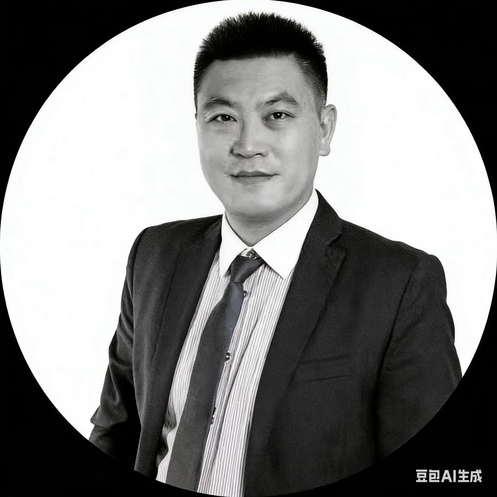
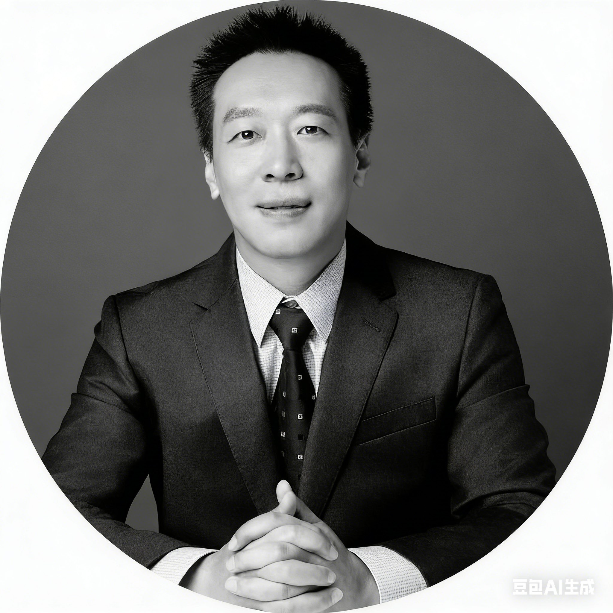
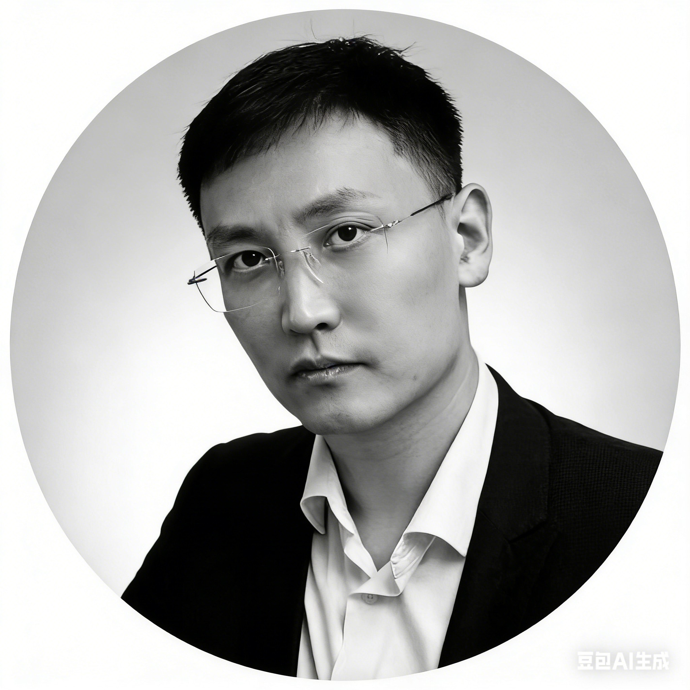

核心團隊
立足中國視角，深耕東南亞市場，既懂企業需求，也通曉在地規則
埃森團隊由具備「中國跨境商務專業背景、東南亞所在地資源深度整合能力，以及長期行業深耕的顧問團隊」共同組成，團隊成員平均擁有五年以上東南亞商務實操經驗，累計服務超過千家中資企業出海。
成員普遍具備所在地語言溝通能力、本地資源沉澱與跨行業實務經驗，既深刻理解中國企業的決策邏輯與出海痛點，亦長期參與東南亞各國政策環境、商業規則與資源架構的實務運作，真正實現「專業判斷、高效落地與長期陪伴」的全鏈路顧問支持。

專業判斷
系統化市場分析，精準落地路徑判斷

本地深耕
東南亞本地實操支援，優質資源直連

長期陪伴
不是一次性服務，而是企業出海長期夥伴
核心管理團隊
深耕東南亞跨境領域，兼具戰略視野與實操能力

盛敏琥
中國法律顧問
精通中國企業出海法律架構、合規與爭議解決，具備豐富的跨境投資與併購經驗。
盛敏琥先生精通中國企業出海法律架構、合規與爭議解決，具備豐富的跨境投資與併購經驗。他長期為中資企業提供法律支持，涵蓋公司設立、股權架構設計、合同談判與風險防控等領域，能夠幫助企業在複雜的國際環境中穩健前行。

孟晗
跨境與公司法律顧問
專注跨境投融資、知識產權與公司治理，為企業全球化布局提供全方位法律保障。
孟晗先生專注跨境投融資、知識產權與公司治理，為企業全球化布局提供全方位法律保障。他在跨國併購、技術轉讓、品牌保護等領域擁有深厚專業知識，能夠協助企業在國際市場中建立穩固的法律基礎，規避潛在風險。

邓葆祯
戰略與資源協同顧問
擅長產業生態構建、創新資產架構與品牌戰略，助力企業實現可持續增長。
邓葆祯先生擅長產業生態構建、創新資產架構與品牌戰略，助力企業實現可持續增長。他在企業戰略規劃、資源整合與價值創造方面具有獨到見解，能夠為企業量身定制發展路徑，實現從戰略到執行的無縫銜接。
香港團隊
連接中國與國際市場的橋樑，提供專業的跨境商務支持
陳志远
跨境商務高級顧問
香港資深商業顧問，20年跨境投資與企業架構經驗，專精中港兩地商務整合。
陳志遠先生是香港資深商業顧問，擁有20年跨境投資與企業架構經驗，專精中港兩地商務整合。他長期為中資企業提供香港及國際市場的戰略諮詢服務，涵蓋公司設立、稅務籌劃、資金運作與合規管理，是企業走向國際化的可靠夥伴。
李明辉
東南亞商務顧問
泰籍華人，15年東南亞市場開拓經驗，精通泰語、中文與英文，熟悉東盟各國商業環境。
李明輝先生是泰籍華人，擁有15年東南亞市場開拓經驗，精通泰語、中文與英文，熟悉東盟各國商業環境。他在泰國、越南、馬來西亞等國擁有廣泛的政府與商業資源，能夠為企業提供從市場進入到本地運營的全流程支持。
美國團隊
連接北美與亞太市場，提供專業的法務與市場拓展服務
張志远
跨境法務顧問
留美法學碩士，12年跨境法律服務經驗，專精國際貿易、投資合規與爭議解決。
張志遠先生是留美法學碩士，擁有12年跨境法律服務經驗，專精國際貿易、投資合規與爭議解決。他熟悉中美兩國法律體系，能夠為企業提供跨境交易、知識產權保護、勞動合規等全方位的法律支持，確保企業在全球化進程中合規運營。
王建国
法商合規顧問
美國法學碩士，10年法商合規經驗，專注企業合規體系建設與風險管理。
王建國先生是美國法學碩士，擁有10年法商合規經驗，專注企業合規體系建設與風險管理。他在跨國企業合規、反洗錢、數據保護等領域具有豐富實踐經驗，能夠幫助企業建立完善的合規框架，應對日益嚴格的國際監管要求。
迈克尔·布朗
東南亞市場高級顧問
美國資深商務顧問，18年東南亞市場研究與拓展經驗，擅長市場進入策略與渠道建設。
布朗先生是美國資深商務顧問，擁有18年東南亞市場研究與拓展經驗，擅長市場進入策略與渠道建設。他對東南亞各國的消費市場、分銷網絡與商業文化有深入理解，能夠為企業制定切實可行的市場拓展方案，加速業務落地。
東南亞本地顧問團隊
覆蓋東南亞核心國家，真正實現供本地化專業支持
颂猜·提拉萨库尔
泰國商務顧問
精通泰國工商、稅務、外資政策，15年本地商務經驗，擁有廣泛的政府與商業資源。
颂猜·提拉萨库尔先生精通泰國工商、稅務、外資政策，擁有15年本地商務經驗。他在泰國投資促進委員會（BOI）、稅務部門與工商界建立了深厚的人脈關係，能夠為外資企業提供從公司註冊、稅務籌劃到政府關係維護的一站式服務。
阮氏玄
越南商務顧問
熟悉越南製造業政策，對接越南工業區管理局與核心資源，12年本地商務經驗。
阮氏玄女士熟悉越南製造業政策，對接越南工業區管理局與核心資源，擁有12年本地商務經驗。她在越南工業地產、製造業投資與供應鏈整合方面具有豐富經驗，能夠幫助製造型企業在越南找到最優的生產基地與合作夥伴。
陈嘉怡
新加坡金融與離岸架構顧問
精通新加坡金融、離岸架構，對接新加坡金融管理局資源，10年跨境金融服務經驗。
陈嘉怡女士精通新加坡金融、離岸架構，對接新加坡金融管理局資源網絡。她在跨境金融、離岸公司架構設計和財富管理領域有豐富經驗，能夠為中資企業提供專業的新加坡落地解決方案。她與新加坡多家銀行、律師事務所和會計師事務所建立了緊密合作關係，能夠為客戶提供一站式的專業服務。
安德里亚·苏善托
印尼商務顧問
熟悉印尼產業市場，對接本地製造與資源鏈下游鏈，14年本地商務經驗。
安德里亚·苏善托先生熟悉印尼產業市場，對接本地製造與資源鏈下游鏈，擁有14年本地商務經驗。他在印尼的製造業、礦業與農業領域擁有廣泛的資源網絡，能夠幫助企業在這個充滿機遇的市場中找到合適的合作夥伴與投資機會。
凯真泰·颂汶
泰國金融與離岸架構顧問
精通泰國金融、離岸架構，對接泰國金融管理局資源，13年跨境金融服務經驗。
凯真泰·颂汶先生精通泰國金融、離岸架構，對接泰國金融管理局資源，擁有13年跨境金融服務經驗。他在泰國的銀行業、證券業與保險業擁有深厚的人脈關係，能夠為企業提供融資、外匯管理與財富規劃等專業服務。
歐洲團隊
覆蓋歐洲主要市場，提供專業的知識產權、房地產與合規服務
彼得·德恩巴赫
知識產權與品牌顧問
台灣執業律師，20年知識產權法律經驗，專精品牌保護與專利策略。
彼得·德恩巴赫先生是台灣執業律師，擁有20年知識產權法律經驗，專精品牌保護與專利策略。他在商標註冊、專利申請、版權保護與知識產權爭議解決方面具有豐富經驗，能夠幫助企業在全球範圍內保護其創新成果與品牌價值。
威廉·克莱门茨
英國房地產與投資顧問
倫敦執業房地產顧問，16年英國與歐洲房地產投資經驗，專精商業地產與住宅開發。
威廉·克莱门茨先生是倫敦執業房地產顧問，擁有16年英國與歐洲房地產投資經驗，專精商業地產與住宅開發。他在倫敦、曼徹斯特等英國主要城市的房地產市場擁有深厚的人脈與專業知識，能夠為投資者提供從項目篩選、盡職調查到交易完成的全程服務。
米歇尔·庞萨尔
競爭與分銷法律顧問
巴黎執業律師，18年歐盟競爭法與分銷法律經驗，專精反壟斷與分銷協議。
米歇尔·庞萨尔先生是巴黎執業律師，擁有18年歐盟競爭法與分銷法律經驗，專精反壟斷與分銷協議。他在歐盟的反壟斷調查、併購審查與分銷網絡合規方面具有豐富經驗，能夠幫助企業在複雜的歐盟監管環境中合規運營。
克里斯·哈特
蘇格蘭房地產與商務顧問
愛丁堡資深房地產顧問，15年蘇格蘭商業地產經驗，專精工業地產與物流設施。
克里斯·哈特先生是愛丁堡資深房地產顧問，擁有15年蘇格蘭商業地產經驗，專精工業地產與物流設施。他在蘇格蘭的工業地產市場擁有廣泛的資源網絡，能夠為製造與物流企業提供從選址、租賃到購置的專業服務。
麦克·帕蒂森
國際併購與房地產顧問
倫敦資深併購顧問，22年國際併購與房地產投資經驗，專精跨國併購與資產重組。
麦克·帕蒂森先生是倫敦資深併購顧問，擁有22年國際併購與房地產投資經驗，專精跨國併購與資產重組。他在歐洲、中東與亞太地區的跨境併購交易方面具有豐富經驗，能夠為企業提供從戰略規劃、目標篩選到交易執行的全程顧問服務。
艾丽西亚·汤普森
歐盟合規與數據保護顧問
阿姆斯特丹執業合規顧問，14年歐盟合規與數據保護經驗，專精GDPR與數字合規。
艾丽西亚·汤普森女士是阿姆斯特丹執業合規顧問，擁有14年歐盟合規與數據保護經驗，專精GDPR與數字合規。她在數據保護影響評估、隱私政策設計與跨境數據傳輸合規方面具有豐富經驗，能夠幫助企業在歐盟市場中合規處理個人數據。
我們的團隊優勢
不同於傳統服務機構，我們以理解與判斷為先，站在中國企業視角推進跨境決策
.png)
本地資源支撐
長期深耕東南亞市場，整合在地關鍵資源與專業體系，確保每一項判斷皆建立於真實可行的實務基礎之上。

雙語無縫溝通
以中英雙語為日常工作語言，準確傳遞商業意圖與決策重點，降低跨文化溝通成本，提升跨境協作效率。

全程資源直連
在關鍵節點直接對接核心執行與決策資源，避免多層轉介造成資訊失真，確保專案推進高效且可控。

跨行業實操累積
多行業出海與落地實操經驗，能快速理解不同商業模式與產業邏輯，提供具體且可落地的解決方案。
想和我們的專業團隊一對一溝通？
告訴我們您的出海需求，我們將為您匹配專業顧問進行響應，提供一對一的專業解答與規劃建議